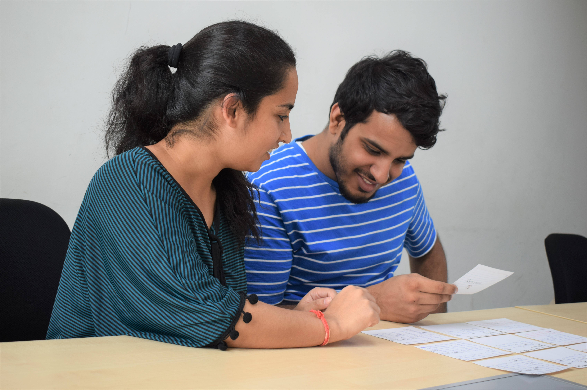

Questions addresses in this research
Is it possible to design an interface that can help non-native people to speak English in a more effective way?
What would be the essential design requirements for helping ESL (English as second language) speakers to better express themselves in English?
Findings
In this study we find out the design requirements that are essential in developing an educational speech improvement interface that helps ESL speakers to express their intentions in a way that makes them easily intelligible.
We adopt the teaching principles pf professional linguists and drama school actors to help people better express their communicative intentions.
TL;DR
-
Problem
- Non-native people have difficulty in speech communication.
- This limits their opportunities for education and employment.
- In this study, we build a speech improvement application using 4 studies --- cue-card study, low-fidelity wireframes, and audio-visual surveys.
- We find 8 design requirements and test them for user validation using a high-fidelity mobile application on 15 users.
What we did
Examples of app screens developed in the study
| Rx | DESIGN | DESCRIPTION |
|---|---|---|
| R1 | Conversation-based pedagogy | A trained member of the research team who can intonate properly speaks as the chat agent |
| R2 | Context-based pitch modulation | Precursor sentences before a target sentence defne context in a conversation between the participant and chat agent |
| R3 | Introductory/concluding screens | Introductory screen presents conceptual facts on intonations and concluding screen rationalizes why to use a particular intonation (7/10) |
| R4 | Gradual increase in difficulty | Gradual increase in number of intonations and difficulty of a training sentence enable ease of learning (10/10) |
| R5 | Gamify the learning process | Red and green visual circles provide instant feedback. (n+1) minimum attempts followed by a hint provide optimal challenge (5/10) |
| R6 | Personalized training metrics | Participant’s own result achieved in a previous session provides benchmark for future performances (6/10) |
| R7 | Holistic analysis | An intonation-wise, sentence-wise and overall overview of the entire session provide a holistic analysis (5/10) |
| R8 | Visual representation of pitch | Bold highlights the words of intonation and variation in text size indicates the place and type of intonation |
My responsibilities
- I was responsilbe for reading relevant literature and discover problems faced by people who have English as second language.
- The 3 researchers were responsible for analyzing the interview recordings and coming up with convergent themes.
- I was responsible for designing the protocol, procedure and recruitment critertia for all the user studies --- cue card testing, low-fidelity wireframe testing, audio-visual surveys and the final mobile application testing.
Team members
I worked on this project with my excellent and very skilled colleagues in Weave Lab at Indraprastha Institute of Information Technology, Delhi.
- Naman Maheshwari (intern at Weave Lab) was responsible for coding the backend of our final mobile application.
- Manshul Belani (Ph.D.) helped thoughout the study in co-designing and conducting all the research studies.
- We were guided throughout by our lab advisor and expert HCI advisor Dr. Aman Parnami.
Design Process
↑ ↓
We followed an iterative design process to step-wise build an interactive application that follows a user-centric design approach.
Study Stages
Click on any of the study stages to jump on the part for details.
↓
↓
↓
↓
- An initial literature review pointed us towards developing a mobile application that inculcates teaching 4 types of intonation expressing various intentionalities in speech.
- A cue-card study was conducted for confirm our hypothesis that teaching the 4 intonations found through literature survey in a conversational set-up would act as an effective structure to learn how to speak English.
- A low-fidelity study was used for coming with the basic app structure, embedding necessary interactions that aide the learning process and finally, governing the app flow.
- An audio-visual user study revealed the most intuitive way to represent stress in written English. This was also one of our key contributions in the study.
- A mobile-based app testing confirmed the hypothesis regarding the teaching methodology, practical applications of the skills taught, usability of the app and novel insights revealed from the subjects.
Literature Review
Motivation - Find out intonations that are used universally in all accents (British, American, Australian etc.) to embed intentionality and expressiveness in speech.
Constraints - Questions (Paralinguistic parameters like loudness, silences, pitch are used to convey intentionality and stress in speech. Are there other ways to embed stress in speech?)
Process - We discovered 4 intonations in English which are used to express pragmatic intentions in communicative speech expressions. These intonations are also taught in film schools and used by professional linguists to teach why, when and how to pronounce certain parts of speech.
Outcome - We use these 4 intonations as our prerequisite design requirement that are necessary to help people practice English speaking in an effective manner.
Four different types of intonations shown along with the places (black line above the text) where they are used in a sentence. a) QI - Relative increase in pitch towards the end of sentence. b) AI - Relative increase and then decrease in pitch at object of context. c) CI - Relative increase in pitch before a continuity in thought, relative increase and then decrease in pitch at the continued part of previous thought, d) SI - Relative decrease in pitch at the end of sentence
Cue Card Testing

Motivation - Test the effectiveness of 4 intonations in conversational speech.
Constraints - Time
Informed by - Prior literature on intonations.
Process - We designed mock conversations between 2 people on cue-cards. These cue-cards visually showed where and how to intonate.
Examples of cue-cards used in the study.

Why cue-card study?As a proof of concept, cue-cards were easy to simulate conversations. They enabled dialogues between two people when each participant had to look at what part of the sentence they need to stress on
Outcome - We obtained positive results on change in user performance due to the use of intonations among 10 participants. Further, qualitative interviews revealed that the use of intonations through dialogues helped participants in practicing contextual speech expressions. This gave us two intitial design requirements (R1, R2) for our mobile application.
Design Requirements From Cue Card Study
Rx DESIGN DESCRIPTION R1 Conversation-based pedagogy A trained member of the research team who can intonate properly speaks as the chat agent R2 Context-based pitch modulation Precursor sentences before a target sentence defne context in a conversation between the participant and chat agent
Low-Fidelity Testing Using Sketch-based Wireframes

Motivation -Find basic app structure, user interactions that aide learning, important information to be displayed on screens, and application flow.
Constraints - Time, technical (app development skills)
Informed by - Design requirements from cue-card study (Context-based and conversational app structure).
Process - Talk aloud user study. We asked 10 participants to go through the entire app structure while brainstorming about it on the go.

Why only sketch-based wireframes?We could use digital prototypes as well, but we found sketch-based prototypes easier to implement.
Outcome - The tests revealed the following 5 new design requirements.
Design Requirements From Low Fidelity Study
Rx DESIGN DESCRIPTION R3 Introductory/concluding screens Introductory screen presents conceptual facts on intonations and concluding screen rationalizes why to use a particular intonation (7/10) R4 Gradual increase in difficulty Gradual increase in number of intonations and difficulty of a training sentence enable ease of learning (10/10) R5 Gamify the learning process Red and green visual circles provide instant feedback. (n+1) minimum attempts followed by a hint provide optimal challenge (5/10) R6 Personalized training metrics Participant’s own result achieved in a previous session provides benchmark for future performances (6/10) R7 Holistic analysis An intonation-wise, sentence-wise and overall overview of the entire session provide a holistic analysis (5/10)
Visual Representation Testing
Motivation - Find visual design of speech (audio) intonations.
Constraints - Visual design experts, Method (What is the best way to get feedback on audio-visual surveys?)
Informed by - Inputs from visual communication expert, and prior research work on phonetics and linguistics.
Following are examples of prior work done in depicting pitch visually -
A) depicts the notation presented by James Rush, B) presents the notation given by Lieberman tracing the 10th harmonic of a spoken sentence, C) depicts notation presented by Crystal, D) presents the notation presented by Bolinger, and E) portrays the notation presented by Ladefoged.
Process - We designed 12 exhaustive visual representation designs by using all combinations of highlight options in a standard text editor ---
Procedure -- Highlight text (using italics, underline, bold, text color, background color).
- Highlight rise and fall of pitch (using text size and line graphs).
- The 12 visual representations were given in a randomized order to 10 students of visual design along with their respective audio clips.
- They were then asked to rate the closeness of the audio recordings to each of the representations (on a scale of 1 to 10) and point out the mismatch between the two if any.
- We designed and built our mobile application on an iOS mobile platform.
- We used Google server for transcribing user audio and Praat software for extracting pitch.
- We designed our own algorithm at the backend to analyze pitch values of users in the mobile application.
- After Pre-Training test
- After the Training test
- After the Post-Training test
- After the Analysis section.
- After the training phase in session 1.
- After the end of session 3.
Following are the visual representation designs that were used in the study -

Outcome - The test revealed our final visual design requirement (R8).
Design Requirements from Visual Representation Testing
Rx DESIGN DESCRIPTION R8 Visual representation of pitch Bold highlights the words of intonation and variation in text size indicates the place and type of intonation
High-Fidelity Testing on Final Mobile Application
Motivation - Develop a mobile application and test it using quantitative and qualitative analysis methods.
Constraints - Time
Informed by - 8 design requirements found through previous studies.
Process - We did the following to develop our mobile application ---
Following figure shows our app architecture -
Mobile Application Structure
The mobile application had 6 phases --- Introduction Phase, Instructions Phase, Pre-Training Phase, Training Phase, Post-Training Phase and Analysis Phase.

Outcome - User testing of our application revealed more than average usability score (SUS - 82.3/100), "good" rating on user experience (UEQ) and various user insights validating our 8 design requirements.
Mobile Application Testing
 Each user test was conducted over 3 sessions (3 consecutive days). Each session was divided into 4 stages --- pre-training test, training, post-training test and analysis.
Each user test was conducted over 3 sessions (3 consecutive days). Each session was divided into 4 stages --- pre-training test, training, post-training test and analysis.
Following figure depicts the the classification of user testing divided among the 3 sessions and among 4 stages within each session -
SEQ (Single Ease Questionnaire)
Process - We conducted a Single Ease Questionnaire (SEQ) test in session 1 at the following stages -
Why did we use an SEQ (Single Ease Questionnaire), conduct separate SEQs after each stage and why only after session 1? - We conducted an SEQ (Single Ease Questionnaire) as we didn't want to cognititvely load a user with too many tasks that are not part of the app usage. We used separate SEQs after each stage as we wanted to find the ease of usability of each stage to find the reasons of user performance on each aspect of app design. Finally, we only conducted the SEQ in session 1 as we didn't want biased user ratings in session 2 and session 3 as they would have already been exposed to the app in earlier sessions.
Outcome - The mean SEQ rating for the four phases --- Pre-Training, Training, Post-Training and Analysis section came out to be --- 6.06, 4.31, 5.12, and 6.25 (out of 7).
Qualitative interviews revealed that a 4.31 rating (somewhere between average and somewhat easy) was justifable as users were made to learn about new intonations, and why, how, and where to apply them in the training section. It was expected for this section to have a higher cognitive load for the users as compared to the other sections.
SUS (System Usability Scale)
Process - We used a System Usability scale (SUS) to test the app usability after the end of session session 1.
Why did we conduct an SUS test only after the end of session 1? - We conducted an SUS test only after the end of session 1 as we wanted to test the user performance on the overall app usage.
Outcome - The overall user-friendliness of our app was rated 82.3 (out of 100) on SUS. Any score above 80.3 (out of 100) on the SUS scale is among the top 10 percentile and correlates to the adjective rating of good.
UEQ (User Experience Questionnaire)
Process - We used a UEQ questionnaire to reveal user reponses on features of the app involving attractiveness, perspicuity, efficiency, dependability, stimulation and novelty.
Outcome - The following figure presents the rating of of the UEQ questionnaire.

Qualitative Observations --- Interviews
Process - We conducted interviews at two stages -
Why did we conduct interviews after training phase in session 1 and after the end of session 3? - We conducted interviews after training phase in session 1 as we wanted to know about our design elements that aide learning in the training phase. We conducted an interview after the end of session 3 to know about overall app features, app experience and its usability.
Outcome - Following themes emerged from our interviews that highlighted aspects of out app that helped in people's learning process and enabled better speech expressions among them.
Novelty of the system
''I was unaware and didn’t think specifcally about stress (intonations) till now. I always thought more on clarity or time spent on a topic, rather than the stress in the pitch.''
Gamification
''The design of the training exercises was very effective in my opinion. The screens were very interactive, it almost became like a challenge not to enter in the Bonus section and get the intonation right in the given number of tries.''
Visual Representation
''...(the context) was easy to understand because of the changed characters (in the visual representation)''
Conceptual Facts on Intonations
''The introductory screen was very important as it introduced me with new conceptual knowledge, which made things relatively easy to understand when I had to perform in the exercises. Also, the feedback screen gave explanations that why depending on a particular question (context) asked by Verbose, the intonation of an answer for specifc words will change.''
Effectiveness of teaching pedagogy
''I guess it (the mobile application) provides hints towards the modulation of how you speak. If someone is talking really fast, or if someone doesn’t know what he or she is speaking, just by the modulation you can tell if that sentence is a question or a statement.''
Gradual Increase in Difficulty
''When the session fnishes, it seems like you have learned a lot. It is a lot of new things, but I think the content has been designed intelligently. I didn’t feel anytime that I have to learn a lot suddenly. It was a gradual process.''
Utility of the Mobile Application
''...in general confused (about context) what they are trying to stress on. At those moments you understand that it (context specifc stress words) matters...like some people intonate words like "the" and "it" , and it just makes the sentence confusing to interpret.''
''It’s important because you want to convey the intention very clearly...my speech has improved. I am not a bland speaker anymore (laughs).''
Quantitative result --- Change in user performance over sessions

Two-Way Repeated Measures ANOVA -
We observed that the change in performance of user intonations is very highly signifcant.Factor F value Details Session F (1, 15) = 13.182 p = 0.003, pes = 0.485 Intonation F (1.329, 18.606) = 15.750 p < 0.001, pes = 0.529, (E = 0.443) Intonation * session F (1.418, 19.852) = 3.969 p = 0.048, pes = 0.221, (E = 0.473)
References -
Liese Exelmans and Jan Van den Bulck. 2017. Binge Viewing, Sleep, and the Role of Pre-Sleep Arousal. Journal of Clinical Sleep Medicine 13 (July 2017), 1001–1008. https://doi.org/10.5664/jcsm.6704